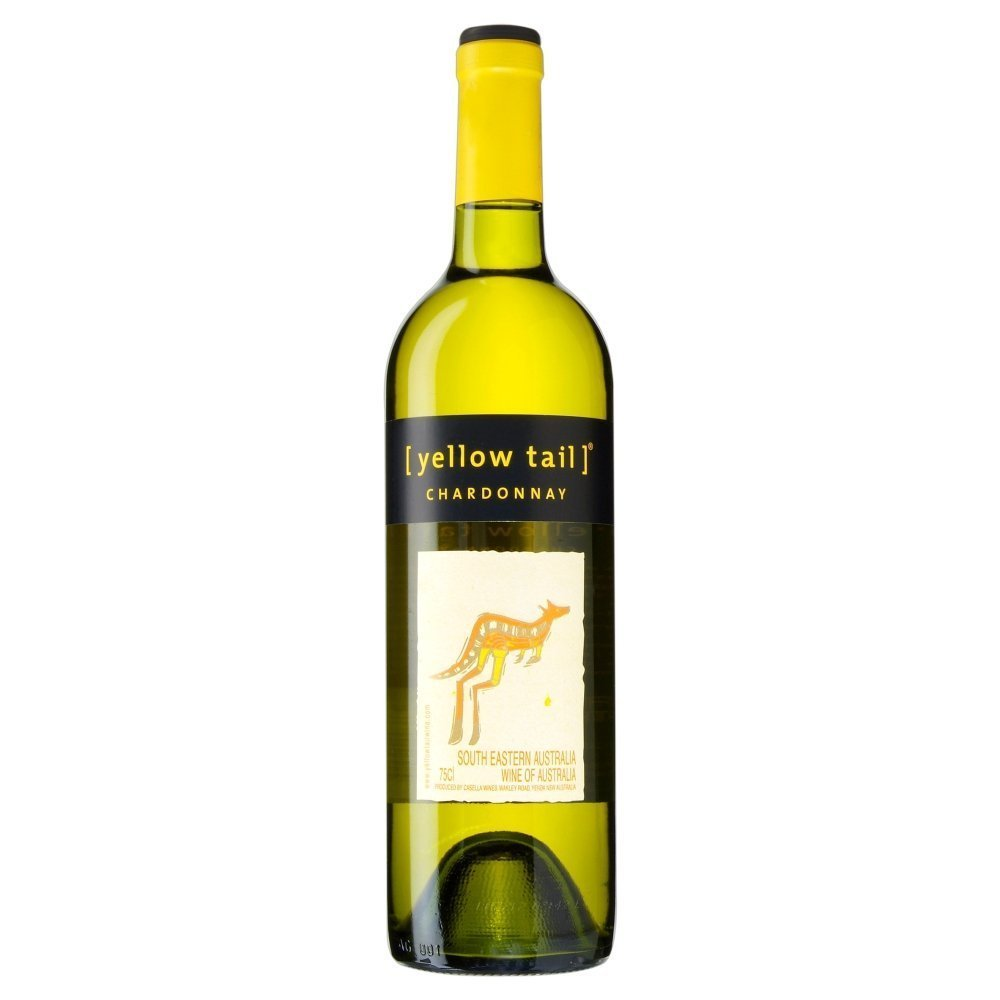
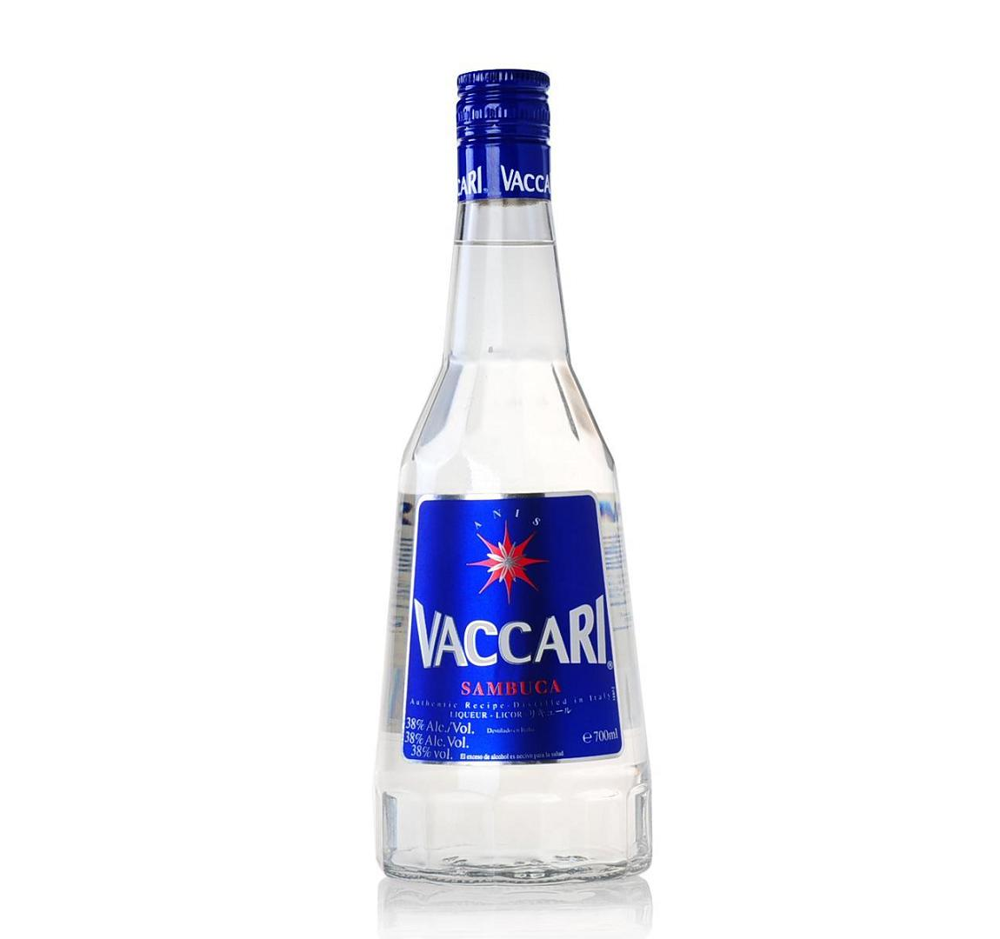
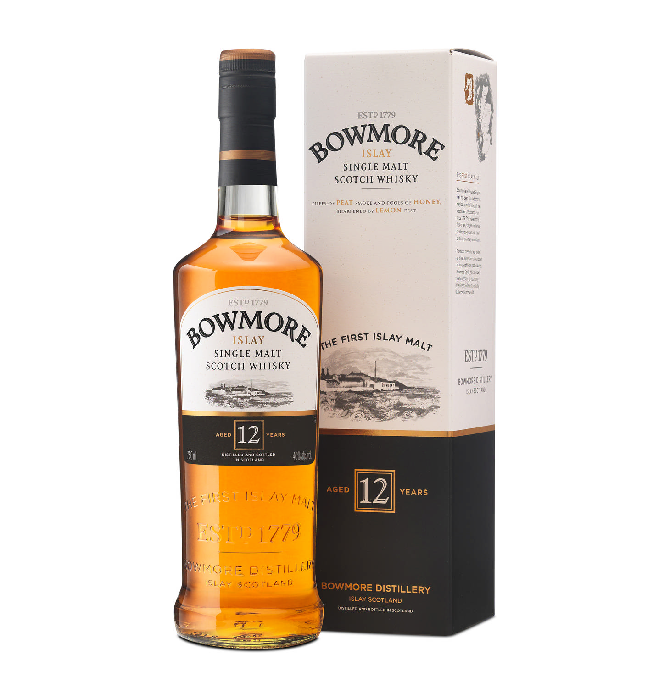
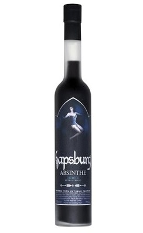
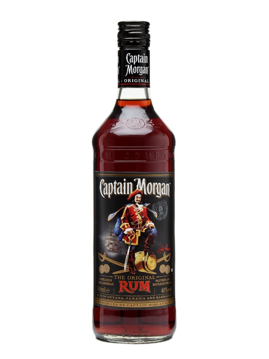

CORONA EXTRA IS NUMBER ONE SELLING BEER IN MEXICO. IT IS A PREMIUM BEER, CLASSIC AND RECOGNIZED WORLDWIDE FOR ITS REFRESHING TASTE AND IMAGE
BLACK&WHITE IS SCOTLAND BASED DRINK AND KNOWN FOR ITS GOOD QUALITY GRAIN WHISKY. ITS LIGHT , FRESH & SPICY WITH HINT OF SMOKE
RED LABEL IS SCOTLAND BASED DRINK. IT IS THE WORLD'S BEST SELLING BLENDED SCOTCH WHISKY. IT HAS INTENSE, SPICY, ZINGY&EDGY FLAVORS

BLACK LABEL IS SCOTLAND BASED DRINK & RECOGNISED AS BENCHMARK OF ALL OTHER DELUXE BRANDS. IT IS PERFECT CHOICE FOR CELEBRATIONWITH SMOOTH BLEND OF INCREDIBLE COMPLEXITY & CHARACTER

JAGERMEISTER IS GERMANY BASED DRINK MADE WITH 56 HERBS AND SPICES AT A STRENGHT OF 35% ALCOHOL BY VOLUME. IT IS FLAGSHIP OF PRODUCTS IN GERMANY. IT HAS MANY HEALTH BENEFITS.

CHIVAS REGAL IS SCOTLAND BASED DRINK. IT IS PERFECT WAY TO CELEBRATE ANY HOLIDAY OCCASION MADE FROM GREEN APPLES AND ORCHARDS FRUITS
ABSOLUT VODKA IS SWEDISH BASED DRINK IS THE LEADING PREMIUM VODKA OFFERING THE TRUE TASTE OF VODKA MADE FROM NATURAL FLAVORS YELLOW TAIL CHARDONNAY IS AUSTRALIAN BASED DRINK KNOWN FOR VIBRANT, FLAVORSOME, FRESH AND EASY TO DRINK WINE WITH AROMAS OF BUTTERSCOTCH, VANILLA & BAKED APPLES.
ABSOLUT PEPPAR IS SWEDEN BASED DRINK . IT IS THE FIRST FLAVORED VODKA IN THE WORLD WITH FLAVOR OF GREEN BELL, CHILLI & JALAPE�O WITH HOT & SPICY FLAVOR
BALLANTINES FINEST IS A SCOTLAND BASED DRINK WITH MORE THAN 50 SINGLE MALTS AS WELL AS 4 SINGLE GRAIN WHISKY AND MOST SELLING BRAND OF WHISKY IN THE WORLD. IT IS REGARDED AS THE TASTE TO SATISFY MORDEN STYLE

GLENFIDDICH IS SCOTLAND BASED DRINK . IT IS THE WORLD�S MOST AWARDED SINGLE MALT SCOTCH WHISKY. MADE FROM PEAR, GRASS, SULTANA AND GREEN APPLE.
TALISKER IS A SCOTLAND BASED DRINK AND A VERY ANCIENT BRAND. IT IS VERY SPICY AND AND THE DISTILLERY CHARACTER IS OFTEN DESCRIBED TO HAVE A CHILLI CATCH
TEACHERS BRAND IS SCOTTISH BASED DRINK. IT IS AN AWARD WINNING BRAND KNOWN FOR ITS DELICIOUS, SMOKY TASTE AND HIGH PEATED MALT CONTENT AND RICHLY FLAVORED WHISKEY
BLENDERS PRIDE IS AN INDIAN BRAND MADE FROM IMPORTED SCOTCH MALT AND BLEND OF INDIAN GRAINS WITH NO ARTIFICIAL FLAVOURING AND AVAILABLE IN DIFFERENT SIZES
BLACK DOG IS SCOTLAND BASED DRINK. IT IS AN AGED AND RARE LIQUID WITH A UNIQUE BLEND OF MALT AND GRAINS TO GIVE WARM & LUXURIOUS FLAVOR TALISKER IS A SCOTLAND BASED DRINK AND A VERY ANCIENT BRAND. IT IS VERY SPICY AND AND THE DISTILLERY CHARACTER IS OFTEN DESCRIBED TO HAVE A CHILLI CATCH
GENTLEMAN JACK IS A TENNESSEE BASED DRINK. IT IS AN 80 PROOF WHISKY WITH TWICE CHARCOAL MELLOWED FOR SMOOTHNESS. IT HAS A SMOOTH FINISH OF FRUIT WITH MAPLE AND FLORAL HONEY
YELLOW TAIL CHARDONNAY IS AUSTRALIAN BASED DRINK KNOWN FOR VIBRANT, FLAVORSOME, FRESH AND EASY TO DRINK WINE WITH AROMAS OF BUTTERSCOTCH, VANILLA & BAKED APPLES
VACCARI IS AN ITALIAN BASED DRINK. IT IS A SUPERB LIQUEUR WITH CHINESE STAR ANISE AND MEDITERRANEAN ANISE WITH FLAVORS OF LIQUORICE, ANISEEDS AND PEPPER
BOWMORE IS SCOTLAND BASED DRINK ALSO KNOWN AS MASTER OF MALT. IT IS SMOKY, FRUITY, COASTAL & DELICIOUS.
ANTIQUITY IS AN INDIAN BRAND WHISKY . IT IS MADE FROM INDIAN AND SCOTCH MALT AND BLENDED WITH GRAIN SPIRIT

BLUE LABEL IS THE WORLDS RAREST WHISKY FROM THE WORLDS FAMOUS BRAND.THE PREMIUM BLENDED WHISKY WHICH MAKES EVERY OCASSION MEMORABLE. IT HAS SLOW,RICH,DEEPAND MULTILAYERED EXPERIENCE
SAUZA GOLD IS A SMOOTH TEQUILA WITH FRESH AGAVE TASTE PLUS AN EXTRA HINT OF COOKED AGAVE AND VANILLA WITH ORANGE BLOSSOMS AND ALMOND NOTES.
YELLOW TAIL SHIRAZ IS AN AUSTRALIAN WINE FULL OF BIG, BOLD & BRIGHT FLAVORS OF RED & BLACKBERRIES AND SMOOTH VANILLA. BALLANTINES FINEST IS A SCOTLAND BASED DRINK WITH MORE THAN 50 SINGLE MALTS AS WELL AS 4 SINGLE GRAIN WHISKY AND MOST SELLING BRAND OF WHISKY IN THE WORLD. IT IS REGARDED AS THE TASTE TO SATISFY MORDEN STYLE
BAILEYS IS IRELAND BASED DRINK. IT IS BEST SELLING LIQUEUR CREAM BRAND THAT IS PERFECT BLEND OF AGED IRISH WHISKEY AND FRESH IRISH CREAM ABSOLUT VODKA IS SWEDISH BASED DRINK IS THE LEADING PREMIUM VODKA OFFERING THE TRUE TASTE OF VODKA MADE FROM NATURAL FLAVORS

VAT 69 IS SCOTLAND BASED DRINK. IT IS FAMOUS OLD BRAND OF BLENDED WHISKY. IT IS A BLEND OF 40 MALTS AND GRAIN WHISKEY. ABSOLUT PEPPAR IS SWEDEN BASED DRINK . IT IS THE FIRST FLAVORED VODKA IN THE WORLD WITH FLAVOR OF GREEN BELL, CHILLI & JALAPE�O WITH HOT & SPICY FLAVOR
JIM BEAM IS USA BASED DRINK. IT IS ONE OF THE BEST SELLING BRAND OF BOURBON IN THE WORLD.
GREY GOOSE VODKA IS FRANCE BASED DRINK TRACEABLE FROM FIELD TO BOTTLE FOR A NATURALLY RICH AND FULL BODIED TASTE. IT IS MADE FROM FRENCH WINTER WHEAT AND SPRING WATER FROM GENSAC
SULA WINES IS AN INDIAN BRAND . IT HAS PRIDE ITSELF IN WINES, SPIRITS AND BEER BOTTLED IN COUNTRY OF ORIGIN TO PRESERVE INTEGRITY AND TASTE OF TERRITORY

SIGNATURE PREMIUM IS AN INDIAN BRAND RELATIVELY CHEAPER AMONG THE OTHER AVAILABLE SCOTCH BRANDS. IT HAS ATTRACTIVE AND DISTINCTIVE AROMAS OF BBQ, SPICE RUBS, CHOCOLATE RUGS AND TERIYAKI JERKI
SMIRNOFF IS MOSCOW BASED DRINK. IT IS THE LARGEST VODKA BRAND IN THE WORLD. IT HAS FLAVORED VODKA FOR SUMMER REFRESHMENTS WITH FRUITY AND DESSERTY TASTES

100 PIPERS IS BOTTLED IN INDIA AND SCOTLAND. IT IS STANDARD BLENDED SCOTCH WHISKY WITH SMOKED NOTES. IT IS WOODY AND FRUITY WITH TOUCH OF PEAT, OAKY FRAGRANCE IN MEDIUM INTENSITY CREATING AN AROMATIC SWEETNESS
COINTREAU IS FRANCE BASED DRINK. IT IS AN ORANGE FLAVORED DRINK. ITS RECIPE IS SIMPLE, NATURAL AND UNCHANGEABLE SINCE ITS CREATION. IT IS DRUNK AS AN APERITIF AND DIGESTIF
OLD SMUGGLER IS A BLENDED SCOTCH WHISKY WITH A HISTORY THAT GOES BACK TO 1835 KNOWN FOR ITS FINE, SMOOTH TASTE WITH A STRONG SELLING WORLDWIDE
BOMBAY SAPPHIRE IS AN ENGLAND BASED DRINK. THE FLAVOURING OF THE DRINK COMES FROM 10 INGREDIENTS ALMOND, LEMON PEEL, LIQCOURE, JUNIPPER BERRIES, ORIS ROOT, ANGELICA, CORIANDER, CASSIA, CUBEB AND GRAINS OF PARADISE

BLUE NUN IS A GERMAN WINE BRAND WITH AROMATIC, FRUITY & RACY GRAPES WITH LIGHT AND ELEGANT IN STYLE
BLUE NUN 22K GOLD SPARKLING IS A DELICIOUS SPARKLING WINE WHICH IS LIGHT AND ELEGANT WITH A TOUCH OF DELICIOUS FRUITINESS
SULA BRUT ROSE IS A QUALITY STEP UP IN THE QUALITY CHAIN WITH ADDITION OF PINOT NOIR- THE MOST IMPORTANT RED GRAPE OF CHAMPAGNE TO THE CUVEE
DON ANGEL TEQUILA LIGHT STRAW COLOURED 100% AGAVE TEQUILATHIS IS STRONG AND POWERFUL TASTE. A VERY GOOD DRINK TO HAVE WHEN IN MOOD FOR FLAVOUR.
BACARDI CARTA BLANCA IS LIGHT TASTING AND AROMATIC HITE RUM WITH DELICATE FRIUTY & FLORAL NOTES, IDEAL FOR MIXING
BACARDI BLACK IS BLACK INTENSE RUM THAT CAPTURES BOLD FLAVOR OF OAK, ORANGE PEEL AND SWEET MOLASSES AND HAS BOLD AND INTENSE TASTE
HAPSBURG AMERE IS A DARK ABSINTHE CREATED WITH CLASSIC WORMWOOD PLANT & ANISE WITH INFUSIONS OF PEPPERMINT, CLOVES & CINNAMON PROVIDE STRONG , MILDLY BITTER YET SMOOTH TASTE.
HAPSBURG RED ABSINTHE IS MADE TO BE USED IN COCKTAILS. IT HAS A SOFTNER ANISEED PROFILE AND LESS ALCOHOL THAN ITS SISTERS BRANDS. THIS MAKES IT IDEAL TO MIX WITH AND CREATE A VISUALLY IMPRESSIVE DRINK
MALIBU IS THE WORLD'S BEST SELLING COCONUT FLAVOURED CARRIBEAN RUM. THE TASTE OF MALIBU IS SUNSHINE IN A BOTTLE - SMOOTH, FRESH COCONUT FLAVOR WITH A SWEET FINISH-PERFECT FOR BRINGING THE SUN-KISSED ISLAND TO ANYTIME.
CAPTAIN MORGAN IS JAMACIA BASED DRINK. IT IS SEEN ON BACK- BARS AROUND THE WORLD. IT IS MADE USING JAMAICAN, GUYANANAND BAJAN RUMS. CAPTAIN & COLA ARE CLASSIC FOR A REASON.
ROCKFORD RESERVE WHISKY IS MADE FROM FINEST OAK AGED SCOTTISH MALT WHISKIES BLENDED WITH CHARCOAL FILTERED INDIAN GRAIN SPIRITS .
JACK DANIEL'S IS A BRAND OF TENNESSEE WHISKEY AND THE TOP SELLING AMERICAN WHISKEY IN THE WORLD. IT IS AN ICONIC BRAND